Quadrato
Definizione 3.7.1. Un quadrato è un parallelogramma avente i quattro lati e i quattro angoli congruenti. □
Dalla definizione si deduce che un quadrato è un rettangolo e un rombo contemporaneamente. Se un quadrilatero è un quadrato, gode di tutte le proprietà del rettangolo e del rombo. Viceversa, per dire che un quadrilatero è un quadrato, è sufficiente dimostrare che è un rettangolo e un rombo.
Le proprietà delle diagonali del quadrato
Teorema 3.7.2 Un quadrato ha le diagonali congruenti; esse sono perpendicolari fra loro e bisettrici degli angoli.
Corollario. 3.7.3 Ogni quadrato è scomposto da ciascuna delle sue diagonali in due triangoli rettangoli isosceli congruenti.
Le diagonali dividono il quadrato in quattro triangoli rettangoli isosceli congruenti.
Condizioni sufficienti perché un parallelogramma sia un quadrato
Teorema 3.7.4 Se un parallelogramma ha
le diagonali congruenti e perpendicolari, oppure
le diagonali congruenti e una di esse è bisettrice di un angolo, allora è un quadrato.
Poiché il quadrato è sia un rettangolo sia un rombo, per le dimostrazioni di questi teoremi basta fare riferimento alle proprietà di queste due figure.